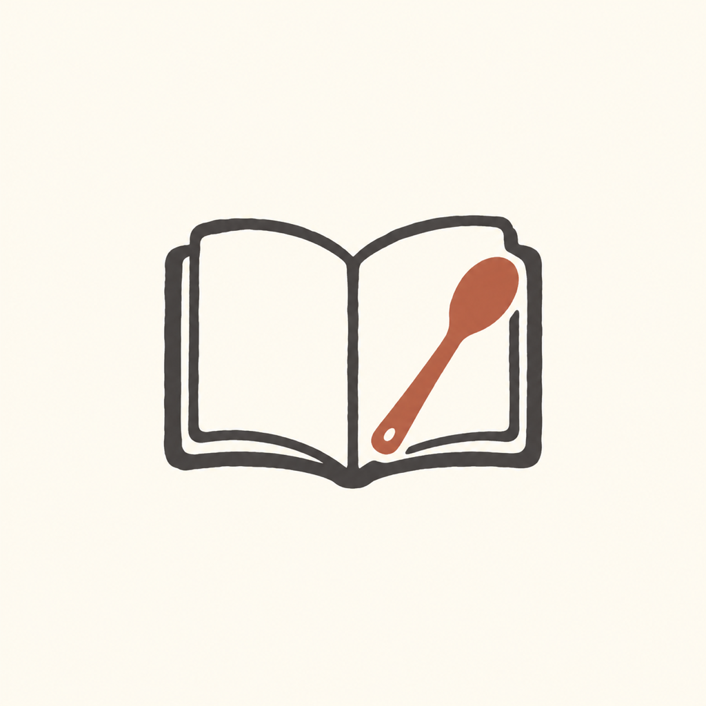
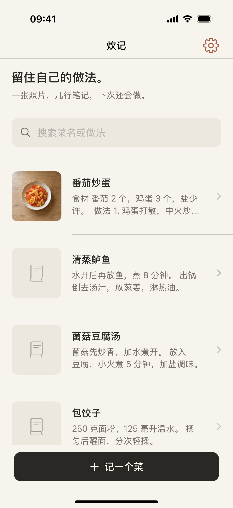
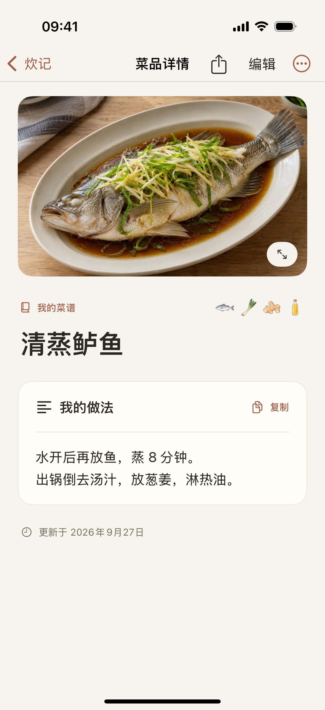
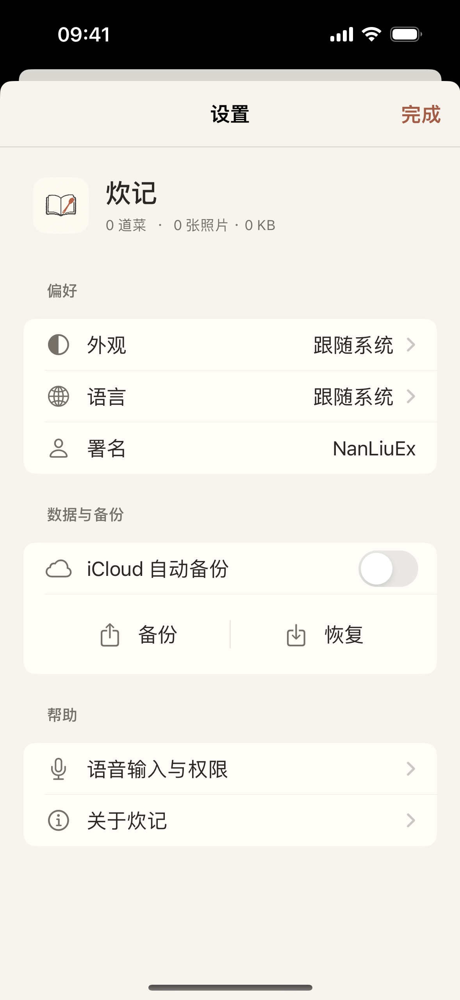

照片与文字，恰到好处
记录成品或过程照片，把配料、步骤和心得写在一处。主页用小图浏览，详情安静地阅读。

炊记一本自己的厨房笔记
一张照片，几行笔记。用量、火候和摸索出来的小心得，都留在自己的菜谱里。下次想做，再翻开。



记录成品或过程照片，把配料、步骤和心得写在一处。主页用小图浏览，详情安静地阅读。
按住说话时实时转文字，松开后直接校正。设备支持时仅使用本机识别，不保存录音，不切换到云端识别。
搜索菜名或做法中的关键词，快速找回笔记。编辑同一道菜，不必重复记录。
将菜名、照片与完整做法排成菜谱图片，再通过系统分享面板分享。长文会自动分页。
.cuijibackup 备份把照片与文字一起打包。开启 iCloud 自动备份后，新增、编辑、删除都会更新同一份备份，其他设备开启后自动合并自己的菜谱。
暖纸色、克制的陶土色和清晰的阅读层次。支持深色、大字体和大屏双栏，不添加广告或社交流。
目前正在准备 App Store 上架。iCloud 为单份自动备份，并非双向实时同步；也可关闭 iCloud，自行导出和导入。本机语音需设备支持对应语言。